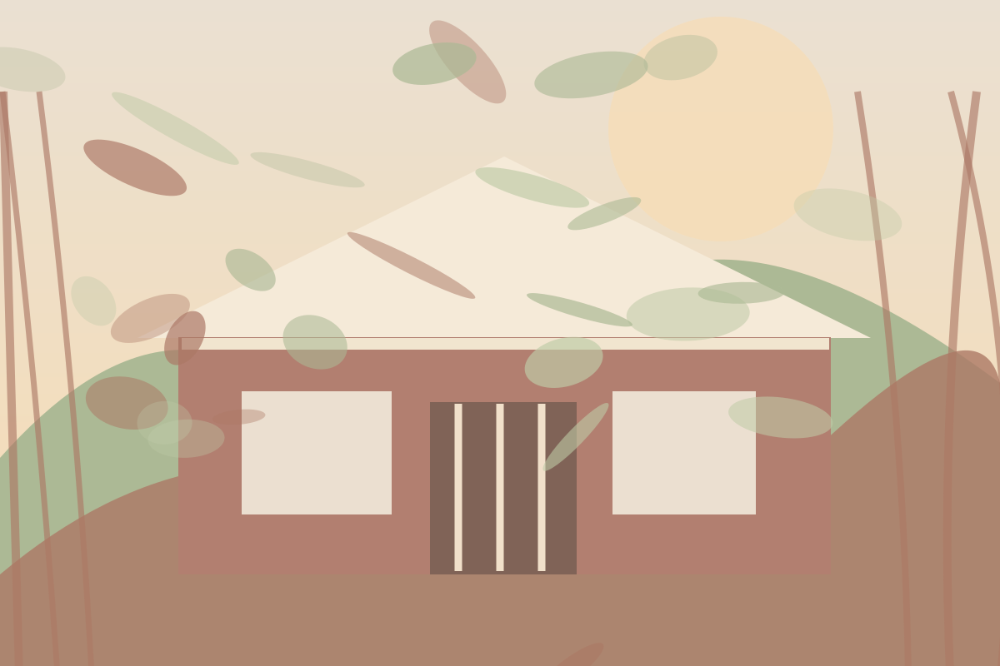
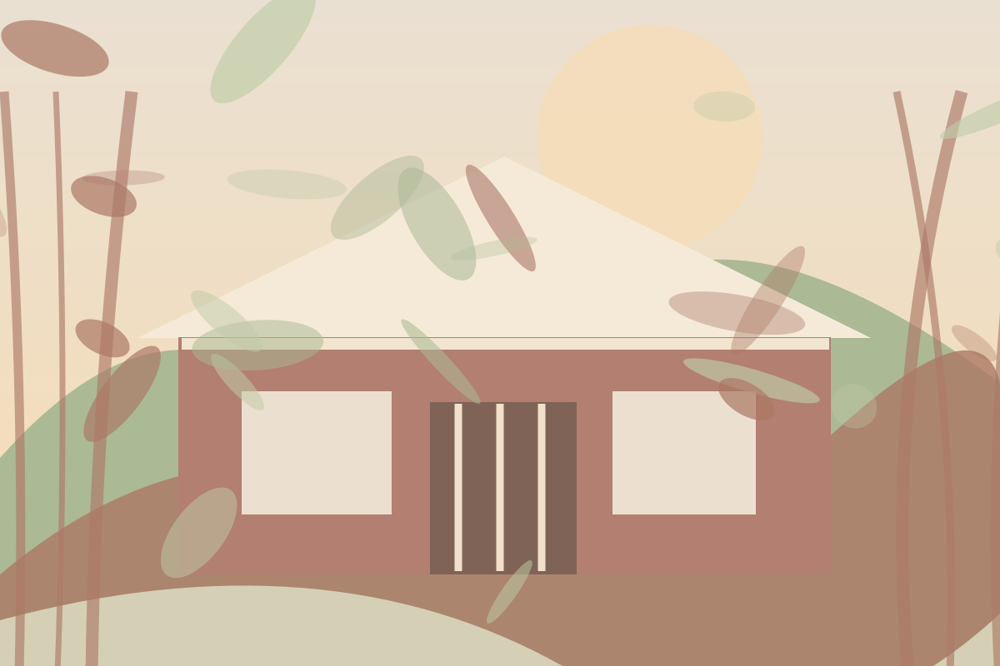
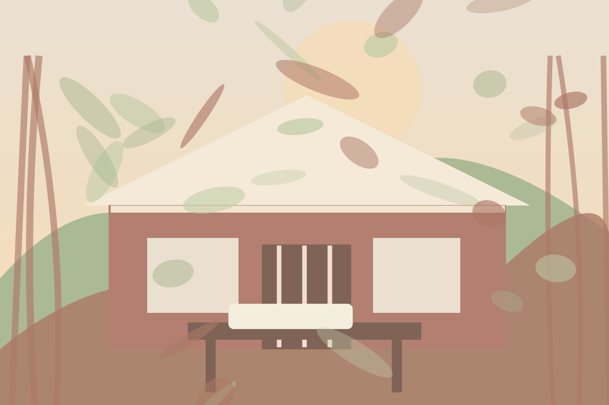
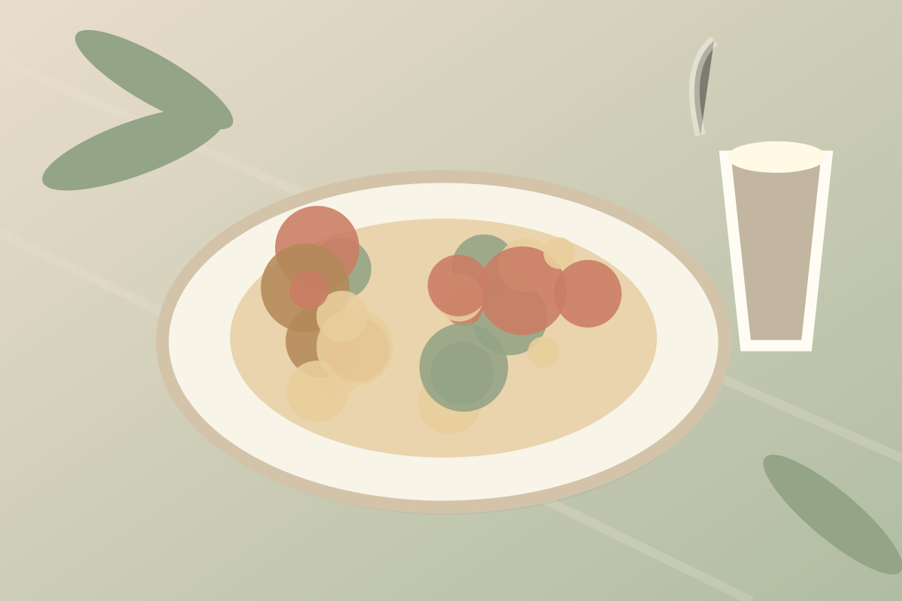

走進電影裡的山中小屋。
浪漫的美式鄉村洋房、綠意環繞的庭園與溫暖的餐桌，讓約會與朋友聚餐多了幾分電影般的儀式感。
以洋房、草地與庭園為主角的氛圍，無論是坐在靠窗的位置，還是在門廊前留下紀念照，都非常適合。每個小角落都充滿山中假日的悠閒。



豐盛的異國料理、薄餅與特色甜點，讓漂亮不只是風景，也延伸到一整桌值得分享的美味。
餐點示意與文字僅供專題介紹；菜單以店家官方公告為準。
地址：台北市士林區國泰街10號營業資訊與預約方式請查看店家官方管道。